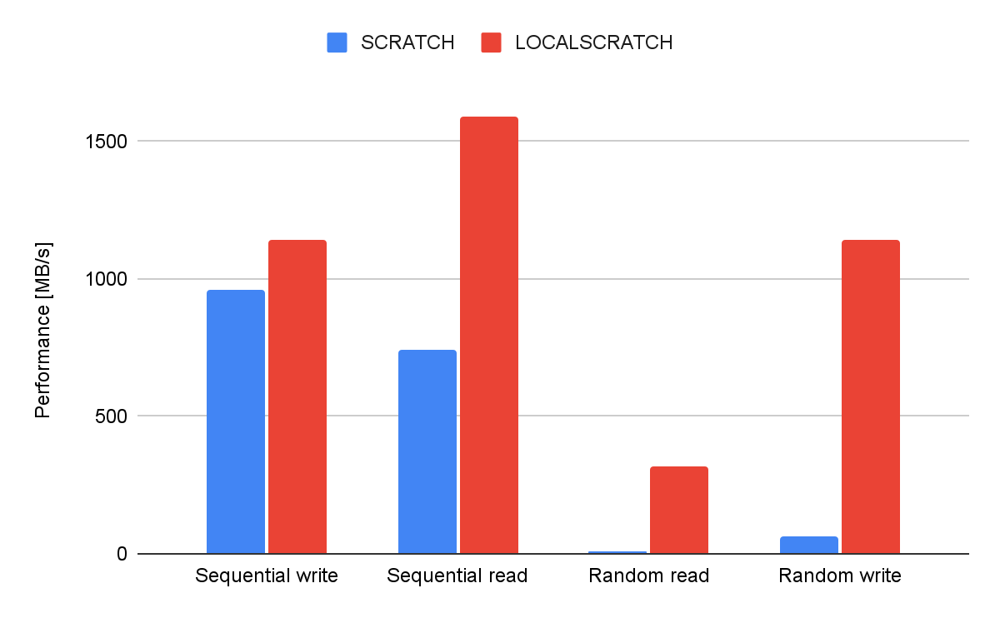

Local storage for scratch files
Why it matters
Usage of local storage for scratch files can have dramatic impact of run time!
Note
localscratch is only available on Saga and Fram.

As illustrated in the figure random read operations are extremely slow on a global parallel file system. Reading and writing large sequential file are fast. Any file operation on a parallel file system incur some kind of metadata operation and this is centralised and need to be coordinated with locks to make sure file integrity is assured. Adding to this is the fact that a large system have a large amount of jobs running, each might open thousands of files. No wonder that most global parallel file systems struggle.
On the other hand local handling of files not only scale with the number of nodes used it also lead to far less demand on the parallel file system, benefiting all users.
The test run to produce the results in the figure above figure took 47 minutes using $LOCALSCRATCH
while it took 20 hours using $SCRATCH.
How to choose location for scratch files
A job typically uses several types of files, including:
the job script itself
the Slurm output file (default:
slurm-<job-ID>.out)input files
temporary files
output files
There are multiple choices for where to keep files.
Name |
Path |
Size |
Description |
|---|---|---|---|
Project area |
|
quota per project |
main project area, for permanent files |
User work area |
|
no quota |
for temporary user files |
Job scratch area |
( |
no quota |
for temporary job files |
Job scratch area on local disk |
( |
few 100GBs per node |
a fast disk on the node where the job runs |
An overall description of the areas is given in Storage areas on HPC clusters.
Each location has its advantages and disadvantages, depending on usage. The parallel file system is very good for sequential read and write of large files.It is by nature (very) slow for random read and write operations and metadata operations (handling of large number of files).
The local file system ($LOCALSCRATCH) is far better suited for this.
In addition the parallel file system needs to serve all users, so
placing very high metadata load on it make the file system slow for
all users. On the other hand, the local file system is local to each
compute node, and cannot easily be shared between nodes (but see
below).
Recommendations
We recommend that the job script itself and the Slurm output file
(slurm-<jobid>.log) are kept on the parallel file system.
The default location for the Slurm output file is the directory where
one runs sbatch. You can also keep both of these files in your home directory,
but be aware that the disk quota for home directories is quite small.
Input files
Where to keep input files depends on how they are used.
If an input file is read sequentially (i.e., from start to end), it is best to keep it in the work/home or project area.
Warning
The storage location pointed to by $LOCALSCRATCH is limited, if
job fails due to storage limitation on $LOCALSCRATCH, use $SCRATCH.
If there is a lot of random read of an input file, it is best to let
the job script copy the file to $LOCALSCRATCH.
Temporary files
By temporary files we mean files created by the job, and that are not needed after the job has finished.
Temporary files should normally be created in $LOCALSCRATCH, since
this is the fastest disk. This is especially important if there is a
lot of random read and/or write of the files.
If other users need access to files while a job runs, you should create files in the user work area or the project area. Files in the project area are readable by users of the same project, and files in the user work area can be made available to other users.
Warning
NOTE: Files in the user work area are deleted after some time.
Output files
By output files we mean files created by the job, and that are needed after the job has finished.
As with input files, if an output file is written sequentially (i.e., from start to end), it is best to create it in the project area.
If there is a lot of random writes (or reads) of an output file, it is
best to create it in $LOCALSCRATCH, and let the job script copy the file to
the project area when the job finishes.
Files in $LOCALSCRATCH and $SCRATCH
The $LOCALSCRATCH area (/localscratch/
A potential limitation of the scratch area is its limited size. As memory has higher cost than spinning disks, the scratch area is rather limited.
The $SCRATCH area (/cluster/work/job/<job-id>) is part of the global parallel
file file system with its own traits like far more space, sharing files etc.
Files placed in all scratch areas will automatically be deleted after the job finishes.
More on Output files
Output files can also be placed in $SCRATCH or $LOCALSCRATCH for
increased speed (see above).
For files in $LOCALSCRATCH, you must use cp in the job script to
copy the file back to the project area before the job exits.
For files in $SCRATCH, you can use the command savefile filename
in the job script, where filename is the name of the file, relative
to the $SCRATCH area. (savefile does not work with
$LOCALSRCATCH.) The command should be placed before the main
computational commands in the script. I.e.,
savefile MyOuputFile
MyProgram > MyOutputFile
This ensures that the file ${SCRATCH}/MyOutputFile is
copied back to the submit directory (the directory you were in when you ran the
sbatch command). The file will be copied back even if the job crashes
(however, if the compute node itself crashes, the file will not be copied back).
If you want more flexibility, it is possible to register a command to
be run to copy the file where you want it by using cleanup <commandline> instead of using the savefile command. It should also
be placed before the main computational commands. This can also be
used for files in $LOCALSCRATCH, i.e.,
cleanup cp $LOCALSCRATCH/MyOutputFile /cluster/projects/ec<N>/mydir
MyProgram > $LOCALSCRATCH/MyOutputFile
If the savefile or cleanup commands contain any special characters
like *, these should be quoted.
Jobs using $LOCALSCRATCH with more than one node
As the $LOCALSCRATCH area is local to each node, files cannot be
shared between nodes like when using $SCRATCH. A job running on
several nodes will get one $LOCALSCRATCH area on each node.
Slurm provide utilities for distributing files to local scratch areas on several nodes and gather files back again. Here is an example to illustrate how this might look:
#!/bin/bash
#SBATCH --account=YourProject
#SBATCH --ntasks-per-node=2
#SBATCH --nodes=2
#SBATCH --mem-per-cpu=500M
#SBATCH --time=00:02:0
#SBATCH --gres=localscratch:100G
## Print the hostnames where each task is running:
srun hostname
## This copies "hello.c" from your submit dir to $LOCALSCRATCH on each node:
srun --ntasks-per-node=1 --ntasks=$SLURM_NNODES cp hello.c ${LOCALSCRATCH}/hello.c
## Simulate output files created on the $LOCALSCRATCH areas on each node
## by copying $LOCALSCRATCH/hello.c to $LOCALSCRATCH/bye.c once on each node:
srun --ntasks-per-node=1 --ntasks=$SLURM_NNODES cp ${LOCALSCRATCH}/hello.c ${LOCALSCRATCH}/bye.c
## This copies the "bye.c" files back to the submit dir:
sgather ${LOCALSCRATCH}/bye.c bye.c
Slurm sgather will append $HOSTNAME to each of the files gathered
to avoid overwriting anything. Note that you have to set up ssh keys
with an empty passphrase on the cluster for sgather to work, because
under the hood, it uses scp to transfer the files.
(There is a slurm command sbcast that can be used instead of srun --ntasks-per-node=1 --ntasks=$SLURM_NNODES cp to copy files to
$LOCALSCRATCH on each node, but it is much slower, and not suited to
large files.)